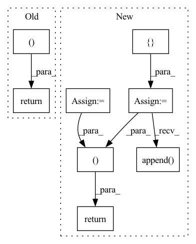

Pattern ID :1965

Before Change
next_mem, next_lmem = map(torch.stack, (next_mem, next_lmem))
next_mem, next_lmem = map(torch.detach, (next_mem, next_lmem))
return out, Memory(short = next_mem, long = next_lmem)
After Change
init_mem = lambda: torch.empty(num_memory_layers, b, 0, d, **to(x))
mem = default(mem, init_mem)
lmem = default(lmem, init_mem)
mem_len, lmem_len = map(lambda t: t.shape[2], (mem, lmem))
total_len = mem_len + lmem_len + self.seq_len
pos_emb = self.pos_emb[:, (self.seq_len - t):total_len]
mem_iter, lmem_iter = map(iterate_tensor, (mem, lmem))
hiddens = []
for ind, (attn, ff) in enumerate(zip(self.attn_layers, self.ff_layers)):
layer_num = ind + 1
use_memory = layer_num in self.memory_layers
memories = map(next, (mem_iter, lmem_iter)) if use_memory else None
if use_memory:
hiddens.append(x)
x = attn(x, memories = memories, calc_memory = use_memory, input_mask = mask, pos_emb = pos_emb)
x = ff(x)
hiddens = torch.stack(hiddens)
out = self.to_logits(x)
// calculate next memory state
next_memory = self.memory_network(lmem, mem, hiddens)
return out, next_memory
In pattern: SUPERPATTERN
Frequency: 3
Non-data size: 8
Instances
Fragment ID: 7327354
Project Name: lucidrains/memory-transformer-xl
Commit Name: cbabe1ae6fa311092a9d0a88116c079a5ad8d790
Time: 2020-07-22
Author: lucidrains@gmail.com
File Name: memory_transformer_xl/memory_transformer_xl.py
M Class Name: MemoryTransformerXL
N Class Name: MemoryTransformerXL
M Method Name: forward(4)
N Method Name: forward(4)
M Parent Class: nn.Module
N Parent Class: nn.Module
M File Name: memory_transformer_xl/memory_transformer_xl.py
N File Name: memory_transformer_xl/memory_transformer_xl.py
M Start Line: 255
M End Line: 296
N Start Line: 306
N End Line: 345
'>
Before Change
// reg_heads shape:[[B, 80, 80, 4],[B, 40, 40, 4],[B, 20, 20, 4],[B, 10, 10, 4],[B, 5, 5, 4]]
// center_heads shape:[[B, 80, 80, 1],[B, 40, 40, 1],[B, 20, 20, 1],[B, 10, 10, 1],[B, 5, 5, 1]]
return cls_heads, reg_heads, center_heads
def _fcos(arch, pretrained, progress, **kwargs):
model = FCOS(arch, **kwargs)
After Change
def forward(self, inputs):
self.batch_size, _, _, _ = inputs.shape
device = inputs.device
[C3, C4, C5] = self.backbone(inputs)
del inputs
features = self.fpn([C3, C4, C5])
del C3, C4, C5
self.fpn_feature_sizes = []
cls_heads, reg_heads, center_heads = [], [], []
for feature, scale in zip(features, self.scales):
self.fpn_feature_sizes.append([feature.shape[3], feature.shape[2]])
cls_outs = self.cls_head(feature)
// [N,num_classes,H,W] -> [N,H,W,num_classes]
cls_outs = cls_outs.permute(0, 2, 3, 1).contiguous()
cls_heads.append(cls_outs)
reg_outs, center_outs = self.regcenter_head(feature)
// [N,4,H,W] -> [N,H,W,4]
reg_outs = reg_outs.permute(0, 2, 3, 1).contiguous()
reg_outs = reg_outs * scale
reg_heads.append(reg_outs)
// [N,1,H,W] -> [N,H,W,1]
center_outs = center_outs.permute(0, 2, 3, 1).contiguous()
center_heads.append(center_outs)
del features
self.fpn_feature_sizes = torch.tensor(
self.fpn_feature_sizes).to(device)
batch_positions = self.positions(self.batch_size,
self.fpn_feature_sizes)
// if input size:[B,3,640,640]
// features shape:[[B, 256, 80, 80],[B, 256, 40, 40],[B, 256, 20, 20],[B, 256, 10, 10],[B, 256, 5, 5]]
// cls_heads shape:[[B, 80, 80, 80],[B, 40, 40, 80],[B, 20, 20, 80],[B, 10, 10, 80],[B, 5, 5, 80]]
// reg_heads shape:[[B, 80, 80, 4],[B, 40, 40, 4],[B, 20, 20, 4],[B, 10, 10, 4],[B, 5, 5, 4]]
// center_heads shape:[[B, 80, 80, 1],[B, 40, 40, 1],[B, 20, 20, 1],[B, 10, 10, 1],[B, 5, 5, 1]]
// batch_positions shape:[[B, 80, 80, 2],[B, 40, 40, 2],[B, 20, 20, 2],[B, 10, 10, 2],[B, 5, 5, 2]]
return cls_heads, reg_heads, center_heads, batch_positions
def _fcos(arch, pretrained, progress, **kwargs):
model = FCOS(arch, **kwargs)
'>
Fragment ID: 7327353
Project Name: zgcr/pytorch-imagenet-cifar-coco-voc-training
Commit Name: d271077f312fa0d2bf7456c3b5edc63e49aa3a39
Time: 2020-07-19
Author: zgcr@mail.ustc.edu.cn
File Name: public/detection/models/fcos.py
M Class Name: FCOS
N Class Name: FCOS
M Method Name: forward(2)
N Method Name: forward(2)
M Parent Class: nn.Module
N Parent Class: nn.Module
M File Name: public/detection/models/fcos.py
N File Name: public/detection/models/fcos.py
M Start Line: 109
M End Line: 109
N Start Line: 82
N End Line: 125
'>
Before Change
x = norm(x)
if return_hiddens:
return x, hiddens
return x
class Encoder(AttentionLayers):
After Change
return_hiddens = False
):
hiddens = []
intermediates = []
prev_attn = None
prev_cross_attn = None
pos_emb = self.pos_emb(x)
mems = mems.copy() if exists(mems) else ([None] * self.depth)
for ind, (layer_type, (norm, block)) in enumerate(zip(self.layer_types, self.layers)):
is_last = ind == (len(self.layers) - 1)
if layer_type == "a":
hiddens.append(x)
layer_mem = mems.pop(0)
if self.pre_norm:
x = norm(x)
if layer_type == "a":
out, inter = block(x, mask = mask, pia_emb = pos_emb, rel_pos = self.rel_pos, prev_attn = prev_attn, mem = layer_mem)
elif layer_type == "c":
out, inter = block(x, context = context, mask = mask, context_mask = context_mask, prev_attn = prev_cross_attn)
elif layer_type == "f":
out = block(x)
x = x + out
if layer_type in ("a", "c"):
intermediates.append(inter)
if layer_type == "a" and self.residual_attn:
prev_attn = inter.pre_softmax_attn
elif layer_type == "c" and self.cross_residual_attn:
prev_cross_attn = inter.pre_softmax_attn
if not self.pre_norm and not is_last:
x = norm(x)
if return_hiddens:
intermediates = LayerIntermediates(
hiddens = hiddens,
attn_intermediates = intermediates
)
return x, intermediates
return x
class Encoder(AttentionLayers):
'>
Fragment ID: 7327351
Project Name: lucidrains/x-transformers
Commit Name: 20a0dc1bf9339ebdb44d48f355c0b5f19501a002
Time: 2021-01-01
Author: lucidrains@gmail.com
File Name: x_transformers/x_transformers.py
M Class Name: AttentionLayers
N Class Name: AttentionLayers
M Method Name: forward(7)
N Method Name: forward(7)
M Parent Class: nn.Module
N Parent Class: nn.Module
M File Name: x_transformers/x_transformers.py
N File Name: x_transformers/x_transformers.py
M Start Line: 399
M End Line: 437
N Start Line: 438
N End Line: 484